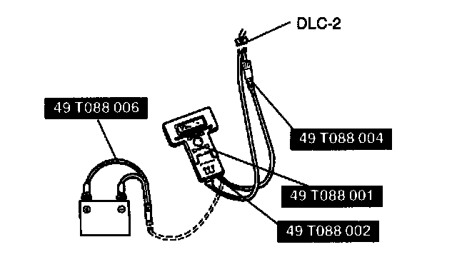
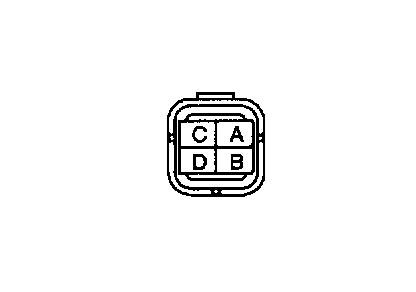

Fuel Pump Operation Inspection
Fuel Pump Operation Inspection
1. Connect the NGS tester to the DLC-2.
2. Remove the fuel filler cap.
3. Turn the ignition switch to ON.
4. Select the "SIMULATION TEST" function on the NGS display. Turn the fuel pump relay from OFF to ON by using the "F/P RLY" and inspect if the operation sound is heard.

5. If no operation sound is heard, measure the voltage at harness side fuel pump connector terminal B.
Specification: Battery positive voltage (Ignition switch ON)
6. If the voltage is as specified, inspect the following.
- Fuel pump continuity
- Fuel pump ground
- Wiring harness between fuel pump relay and PCM terminal 3N
7. If not as specified, inspect the following.
- Fuel pump relay
- Wiring harness and connector Between main relay and fuel pump relay Between fuel pump relay and fuel pump